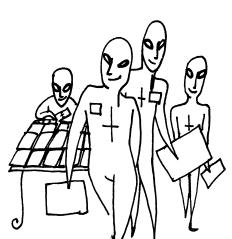
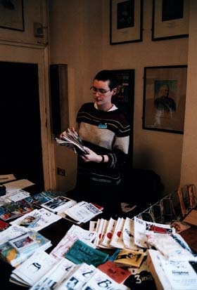

Let us sell your comics
Many people have asked whether they can hire a table at CAPTION. While we will have one or two guest tables at CAPTION, we differ from most conventions in that we don’t have a dealers room with lots of tables: we tried this once, but it wasn’t fun. Instead we run the CAPTION Table, where anyone attending the con can leave a stack of their minicomics to be sold by CAPTION’s gofers.
 The system works like this. As you arrive, you leave comics at the CAPTION table. You'll be given a form to write in their titles and the quantities placed on the table. Obviously it helps if the title and cover price are fairly clear on the comic itself! During the day the CAPTION gofers will use this to record sales, and at the end of the day you collect the unsold comics (if any) and the money raised, minus a 10% cut to help cover CAPTION’s costs.
In between, you get to stalk the halls of the East Oxford Community Centre, no longer tethered to a table jammed in amongst a dozen others, free to join the workshops and vist the panels.
